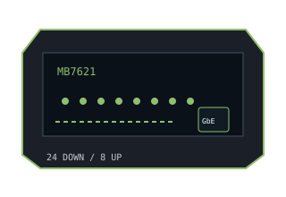

[ MODEL-SPECIFIC NETWORK HARDWARE ]
Motorola MB7621 DOCSIS 3.0 Cable Modem
24×8 DOCSIS 3.0 stand-alone cable modem with one Gigabit Ethernet handoff. It has no wireless LAN or telephone interface.

EXACT MODEL / SKU: Motorola MB7621, North American MB7621-100NAS family. Match label and hardware revision to provider certification.
Exact specifications and compatibility
| Model / SKU | Motorola MB7621; North American retail model MB7621-100NAS. |
|---|---|
| Modem standard | DOCSIS 3.0, 24 downstream × 8 upstream bonded channels; backward interoperability depends on the cable system. |
| Interfaces | Coaxial F-type cable input; 1 × Gigabit RJ-45 Ethernet output to one router or host. |
| Downstream / upstream | Manufacturer specifies plans up to 1Gb/s downstream (24×8 class; marketed download capability may be stated as approximately 1,029Mb/s). Eight bonded upstream channels are supported; actual upload rate is limited and provisioned by the operator. |
| Telephone service | No voice/eMTA jack; not compatible with bundled telephone service requiring a voice modem. |
| Provider compatibility | Check Motorola's provider list and the cable operator's approved-device list for MB7621-100NAS, requested speed tier and region before buying; provider registration is required. |
| Firmware / host compatibility | ISP controls DOCSIS firmware provisioning and updates. Standard Ethernet requires no operating-system-specific modem driver; activation still requires provider support. |
| Power and safety | 12V DC, 1.5A external adapter. Use the model's supplied UL-listed adapter, keep the modem dry and ventilated indoors, and disconnect power before cleaning or moving. |
Model-specific notes
The Gigabit port, provider package, signal quality and upstream channel plan set the usable rate. No Wi-Fi router, telephony port, or independent upload guarantee is included.
Manufacturer specifications and manual
- Motorola MB7621 manufacturer data sheetModel-specific data-sheet reference for DOCSIS channels, Ethernet interface, rated speed and power. This legacy support host may restrict automated fetches.
- Motorola MB7621 official set-up and installation guideManufacturer support instructions for the exact model, setup and web interface.